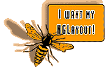

|
LATEST BUZZ
We Want Our NGLayout! Whip Netscape into shape. Sign the petition.
WaSP Invasion! Spotted at Silicon AIP, coming to Boston Web98. The WaSP is everywhere. Read all about it.
THE WEB STANDARDS PROJECT (WaSP) is a collective effort of web developers, tool developers, and end users. Our mission is to stop the fragmentation of the web, by persuading the browser makers that common standards are in everyone's best interest. Together we can make the web accessible to everyone.
Send a Message to the Browser Makers!
Lack of standards makes websites more expensive for clients and developers, makes pages break for users, and will break the web itself, unless the situation improves.
If you want to help us bring standards to the web, just sign this short support form. Or better yet, become a member of the Web Standards Project!
Sign the petition.
Let Netscape know you care about getting that standards-friendly NGLayout
engine, which is supposed to make Navigator 100% compliant with CSS-1 and
DOM, into the next version of their browser. Before they exhaust their resources on Netcenter, remind them that standards come first. Tell 'em you want your NGLayout!
The Web Standards Project's Baseline Proposal has been translated into German, French, Italian, Dutch, Portugese, Spanish, and Swedish, with many more translations on the way.
|